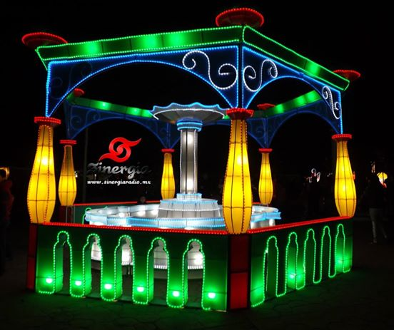
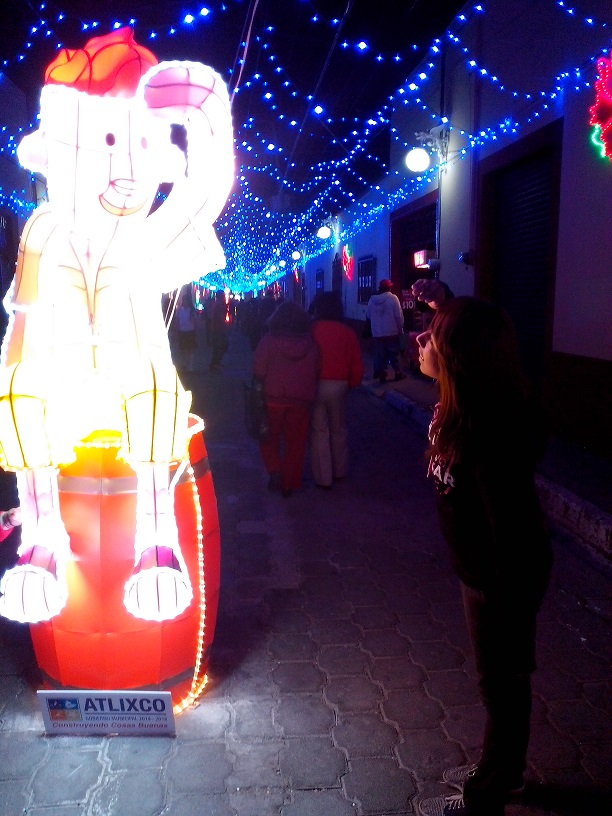

La noche de este martes, ante miles de familias y un espectáculo de pirotecnia, el alcalde de Atlixco, José Luis Galeazzi Berra, inauguró la Cuarta Edición de la Villa Iluminada, que concluirá el próximo 6 de enero de 2015.
En esta ocasión, a través de 3 mil figuras nuevas y durante 43 días, todos los visitantes podrán disfrutar de la belleza arquitectónica de la ciudad de Atlixco, que se embellece con luces coloridas de variantes tonos y escenas alusivas a la época decembrina y la identidad atlixquense.
Previo al conteo para el encendido de las luces, donde también estuvieron presentes Elvia María Siliceo de Galeazzi, Presidenta del DIF Municipal; Salvador Escobedo Zoletto, Diputado Local y Edwin Mora Caballero, Presidente Municipal de Huaquechula, el alcalde atlixquense invitó a todas las familias a disfrutar de este hermoso recorrido y a tener una época decembrina llena de paz y unión: “Villa Iluminada 2014, para que celebremos juntos esta navidad, con armonía, con la familia y en paz”.
Posterior al encendido, hubo un espectáculo de nieve en la calle Constitución, que miles de pequeños, con sus familias, disfrutaron al máximo.
Villa Iluminada espera la llegada de entre 450 a 500 mil visitantes, lo cual permitirá tener una derrama económica de 55 a 60 millones de pesos, pues habrá poco más de 100 eventos culturales y artísticos, con la participación de 30 grupos provenientes de países como Guatemala, Colombia, España, Perú, Irlanda, Libia, Chile, Kenia e Italia, así como de México y la región.
El recorrido inicia, como ya es tradición, en la Avenida Hidalgo esquina con la calle 7 sur, atravesando el Zócalo de la ciudad y continúa por la Calle Constitución, pasando por la calle 4 norte, frente al Ex Convento del Carmen, la calle Nicolás Bravo, recorriendo el Boulevard Ferrocarriles para finalizar en el Parque Revolución. También, dentro de Villa Iluminada se va a presentar la Feria de la Nochebuena, del 28 de noviembre al 7 de diciembre y la Villa Infantil, que es un proyecto enfocado a los pequeños, a partir del día 12 de diciembre, ambos en el interior del Recinto Ferial.
El presidente municipal José Luis Galeazzi Berra inauguró la decimotercera Feria de la Nochebuena, en la cual desde el 29 de noviembre hasta el 7 de diciembre se exhibirán alrededor de 25 mil plantas de nochebuena en 27 variedades.
El edil mencionó que una de las cosas más importantes para el éxito es la organización; en este aspecto, comentó que el municipio de Atlixco cuenta con una buena estructura para con los tres diferentes tipos de gobierno, al mismo tiempo, dijo estar muy orgulloso por la gran labor que desempeñan los productores. Si no fuera por su arduo trabajo y dedicación, no se estarían viendo los frutos que desde hace trece años han ido trabajando, tiempo en el que se ha logrado aumentar dos eslabones importantes para el éxito, que es la producción y la comercialización.
Por su parte, el director de Desarrollo Agropecuario, Lorenzo Díaz Ortega, dijo estar orgulloso de que Atlixco sea, gracias a las manos de la gente entusiasta que cultiva la flor de nochebuena, el municipio que tiene el tercer lugar a nivel estatal en producción de esta flor. Asimismo, comentó que “cuando se conjuntan esfuerzos el trabajo se hace menos y es más exitoso”.
“Desde hace 13 años nos dimos a la tarea de aventurarnos a producir la nochebuena en Atlixco, y es este municipio que gracias a su clima y suelo nos ha dado una gran ventaja para poder seguir produciendo la flor de nochebuena”, dijo el presidente del Comité de la Feria de la Nochebuena, Francisco Santiago Cruz.
El delegado de la Secretaría de Agricultura, Ganadería, Desarrollo Rural, Pesca y Alimentación (Sagarpa) en Puebla, Alberto Jiménez Merino, mencionó que Atlixco se ha caracterizado por su actividad turística, económica, pero también hay mucho historial en relación con el campo. Como el aguacate, las plantas medicinales y también porque es el municipio que cuenta con el orquideario más importante del estado.
La nochebuena en esta temporada es una flor emblemática que se cultiva en Atlixco. Se pueden encontrar un millón 300 mil plantas de diferentes tamaños. En conjunto con otros estados se llega a la producción cercana de 2 millones de plantas, generando así una derrama económica de 45 millones pesos cada año; asimismo, la producción de estas plantas genera aproximadamente 3 mil 200 empleos permanentes y otros 9 mil empleos de manera indirecta, de ahí la gran importancia que tiene este cultivo.
En esta inauguración se contó con la presencia del jefe del Distrito 05 de Cholula de la Sagarpa, Rogelio Quiroz Spezzia; Arturo Flores Grande en representación del gobernador Rafael Moreno Valle Rosas; el director General de Desarrollo Humano y Económico con Inclusión Social, Juan Francisco Torres Montiel, y la directora de Promoción y Articulación Turística, Isabel Santos Torres.
En esta seccion podras encontrar algunas fotografias de la Villa Iluminada 2014...!!





Aqui se encuentran todas las actividades culturales que se realizaran en diferentes lugares y horarios para que toda la gente pueda asistir a disfrutar de la villa iluminada y toda su cultura...!!


En esta seccion podras encontrar el mapa de villa iluminada para que puedas recorrer todos los lugares y no perderte de nada..!!

En esta seccion podras encontrar algunas fotografias de la Feria de la Nochebuena 2014...!!